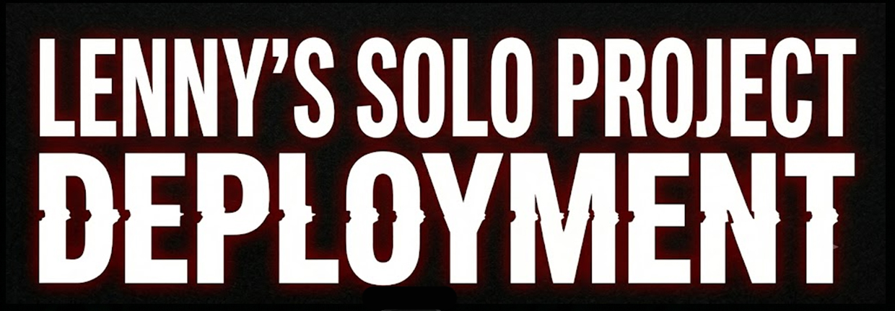
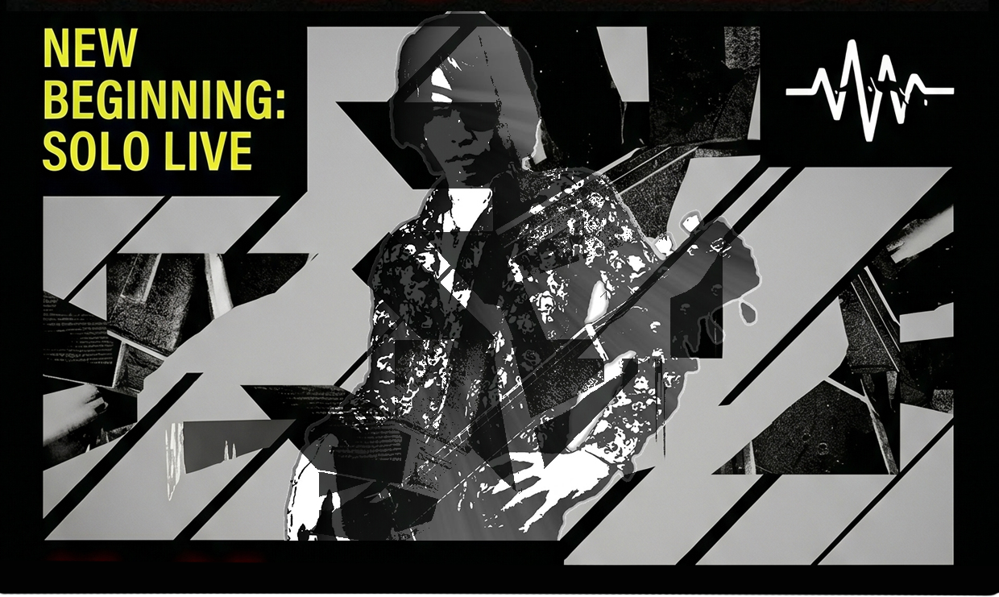
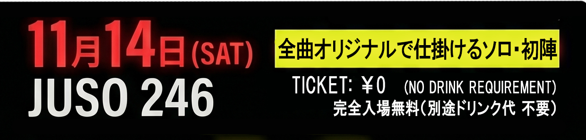

THEE INSANE MONKEYS で活動してきた日々は 僕にとってかけがえのない時間であり 生涯忘れられない宝物になりました。 支えてくれたメンバー、JUSO 246、スタッフ そしてずっとずっと応援してくださった皆さん。 本当にありがとうございました。 THEE INSANE MONKEYS は LENNYが預かります。 またいつか あのメンバーと同じステージに立つ日まで。
しかし、これは終わりではありません。 新しい挑戦 新しい景色 新しい音楽 ここからまた始まります。 LENNY SOLO PROJECT DEPLOYMENT LENNY史上最大級の挑戦が。 けど、今は 今だけは 「ここに居て」 そして 「また逢えるって、約束して」 そんな願いを この動画に込めました。
THE YELLOW MONKEY
「未来はみないで」Cover by LENNY
ライブ情報、制作状況、新曲 そして 『ライブ配信』 その他活動情報 SNSにて随時更新していきます。